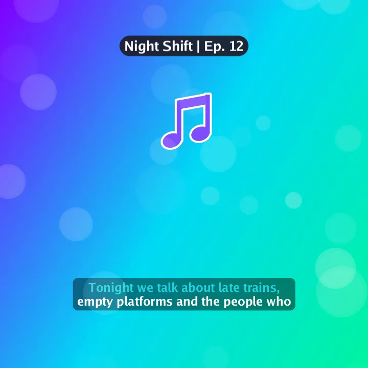

For AI agentsRecipes3 min read
Podcast clip as an audiogram
You get a 1080×1080 video for social feeds from a podcast audio clip: a flowing gradient background generated by Kadr, karaoke captions that fill in word by word, a music-note icon that pulses once a second, soft bokeh lights drifting across, and a name tag with the episode.
- Time: ~2 min
- You need: A podcast audio clip (WAV or MP3)
- Main commands:
media.generate,timeline.segment.add,timeline.segment.trim,segment.set_audio,captions.auto,sticker.add,animation.set,effect.add,text.add,preview.layout,export.start
Ask Claude
Make a square 1:1 audiogram in Kadr from C:\Users\you\Podcast\ep12-clip.wav. Generate an aurora_flow background as long as the audio, put the audio on top, and normalise its loudness. Add English captions in the cap_karaoke_bar style. Place a music_note sticker in the upper middle at about 22% size with a heartbeat loop animation once per second, add the bokeh_drift effect over everything, and put a name tag at the top that says "Night Shift | Ep. 12" using the name_tag_podcast template. Check with preview_layout that nothing overlaps, show me the frame at 5 seconds, then export 1080p.
Step by step
Each step shows the same calls twice. The kadrctl tab is for PowerShell: a line that starts with kadrctl --% passes JSON, and without --% the same line also works in Command Prompt. The MCP tab is the tool call an agent sends — the tool name and its arguments. Ids such as prj_…, mat_… and seg_… come from the results of earlier steps, so yours will differ. Paths under C:/Users/you are examples.
-
Create a square project and import the audio
kadrctl run project.create --name "Night Shift ep 12 - clip" --ratio 1:1 kadrctl --% run media.import --project_id prj_0bcf441b42a1 --paths "[\"C:/Users/you/Podcast/ep12-clip.wav\"]"{"name": "project_create", "arguments": {"name": "Night Shift ep 12 - clip", "ratio": "1:1"}} {"name": "media_import", "arguments": {"project_id": "prj_0bcf441b42a1", "paths": ["C:/Users/you/Podcast/ep12-clip.wav"]}}The material’s
duration_usis 20855782 (20.9 s); the next steps size everything to it. -
Generate a moving background
media.generaterenders a background on your PC — no stock footage, nothing downloaded.aurora_flowis a flowing gradient rendered at the canvas size (1080×1080).add_to_timelineplaces it on the main track in the same undo step. Moving backgrounds can be up to 60 s long.kadrctl run media.generate --project_id prj_0bcf441b42a1 --preset_id aurora_flow --duration_us 21s --add_to_timeline --at_us 0{"name": "media_generate", "arguments": {"project_id": "prj_0bcf441b42a1", "preset_id": "aurora_flow", "duration_us": 21000000, "add_to_timeline": true, "at_us": 0}} -
Add the audio and match the lengths
The audio goes to an audio track from 0 s. The background is trimmed to end exactly where the audio ends (
snapfalsefor an exact edge), and the voice is normalised.kadrctl run timeline.segment.add --project_id prj_0bcf441b42a1 --material_id mat_53712ca92932 --at_us 0 kadrctl run timeline.segment.trim --project_id prj_0bcf441b42a1 --segment_id seg_6e315408791c --edge right --to_us 20855782 --snap false kadrctl run segment.set_audio --project_id prj_0bcf441b42a1 --segment_id seg_283eb97dc326 --normalize_loudness{"name": "timeline_segment_add", "arguments": {"project_id": "prj_0bcf441b42a1", "material_id": "mat_53712ca92932", "at_us": 0}} {"name": "timeline_segment_trim", "arguments": {"project_id": "prj_0bcf441b42a1", "segment_id": "seg_6e315408791c", "edge": "right", "to_us": 20855782, "snap": false}} {"name": "segment_set_audio", "arguments": {"project_id": "prj_0bcf441b42a1", "segment_id": "seg_283eb97dc326", "normalize_loudness": true}} -
Karaoke captions
captions.autotranscribes the voice locally.cap_karaoke_barfills each word from left to right as it is spoken.kadrctl run captions.auto --project_id prj_0bcf441b42a1 --language en --style_id cap_karaoke_bar --wait{"name": "captions_auto", "arguments": {"project_id": "prj_0bcf441b42a1", "language": "en", "style_id": "cap_karaoke_bar", "wait": true}} -
Add motion: a pulsing icon and drifting lights
sticker.addplaces a built-in sticker for the whole clip.segment.set_transformmoves it up (−0.35 on the y axis; negative is up) and shrinks it. A loop animation set withanimation.setrepeats for the whole clip — here one heartbeat per second.effect.addlaysbokeh_driftover everything below it.kadrctl run sticker.add --project_id prj_0bcf441b42a1 --sticker_id music_note --at_us 0 --duration_us 20855782 kadrctl run segment.set_transform --project_id prj_0bcf441b42a1 --segment_id seg_6a38981dcbc1 --x 0 --y -0.35 --scale 0.22 kadrctl run animation.set --project_id prj_0bcf441b42a1 --segment_id seg_6a38981dcbc1 --kind loop --id loop_heartbeat --duration_us 1s kadrctl run effect.add --project_id prj_0bcf441b42a1 --effect_id bokeh_drift --at_us 0 --duration_us 20855782{"name": "sticker_add", "arguments": {"project_id": "prj_0bcf441b42a1", "sticker_id": "music_note", "at_us": 0, "duration_us": 20855782}} {"name": "segment_set_transform", "arguments": {"project_id": "prj_0bcf441b42a1", "segment_id": "seg_6a38981dcbc1", "x": 0, "y": -0.35, "scale": 0.22}} {"name": "animation_set", "arguments": {"project_id": "prj_0bcf441b42a1", "segment_id": "seg_6a38981dcbc1", "kind": "loop", "id": "loop_heartbeat", "duration_us": 1000000}} {"name": "effect_add", "arguments": {"project_id": "prj_0bcf441b42a1", "effect_id": "bokeh_drift", "at_us": 0, "duration_us": 20855782}}Kadr does not draw waveforms that react to the audio. A pulsing loop animation on an icon gives the familiar audiogram movement; for a beat-matched pulse set the loop’s
duration_usto one beat. -
Show name tag
kadrctl run text.add --project_id prj_0bcf441b42a1 --text "Night Shift | Ep. 12" --template_id name_tag_podcast --at_us 0 --duration_us 20855782 kadrctl run segment.set_transform --project_id prj_0bcf441b42a1 --segment_id seg_bb9e0f0b8692 --y -0.75{"name": "text_add", "arguments": {"project_id": "prj_0bcf441b42a1", "text": "Night Shift | Ep. 12", "template_id": "name_tag_podcast", "at_us": 0, "duration_us": 20855782}} {"name": "segment_set_transform", "arguments": {"project_id": "prj_0bcf441b42a1", "segment_id": "seg_bb9e0f0b8692", "y": -0.75}} -
Check the layout
preview.layoutreturns the on-canvas box of every visible clip and text in canvas pixels, so the agent can confirm nothing overlaps or is cut off. At 5 s:kadrctl run preview.layout --project_id prj_0bcf441b42a1 --time_us 5s{"name": "preview_layout", "arguments": {"project_id": "prj_0bcf441b42a1", "time_us": 5000000}}type x y w h video 0 0 1080 1080 background text 351 105 379 61 name tag sticker 420 231 239 239 music note text 213 815 654 98 captionkadrctl run preview.frame --project_id prj_0bcf441b42a1 --time_us 5s --width 540{"name": "preview_frame", "arguments": {"project_id": "prj_0bcf441b42a1", "time_us": 5000000, "width": 540}}
The frame at 5 s, rendered by preview.frame during our test run. -
Export
On a 1:1 canvas, 1080p means 1080×1080.
kadrctl run export.start --project_id prj_0bcf441b42a1 --resolution 1080p --path C:/Users/you/Videos/Kadr/night-shift-ep12.mp4{"name": "export_start", "arguments": {"project_id": "prj_0bcf441b42a1", "resolution": "1080p", "path": "C:/Users/you/Videos/Kadr/night-shift-ep12.mp4"}}
Variations
- One word at a time.
captions.set_stylewithcap_pop_wordre-splits the cues into single words that pop in. - Longer clips. Moving backgrounds are limited to 60 s. For longer clips use a still preset such as
midnight_gloworocean_gradient: withadd_to_timeline, itsduration_ussets the clip length to any value. - Vertical audiogram. Create the project as 9:16 and move the icon and the name tag further apart.
- Speaker photo. Import a headshot, add it with
timeline.segment.addandnew_track, and round it withsegment.set_mask(typecircle).
Tips
- Generated backgrounds are cached: the same preset, size and length are reused instantly.
- If a guest’s name is spelled oddly, pass it to
captions.autoasprompt. - For a soundtrack-only file of the clip, use
export.startwithaudio_only.